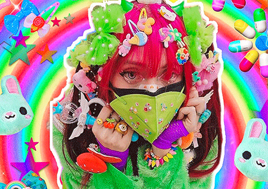
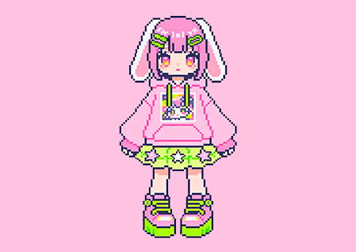

MANIFIESTO VISUAL
LOOKBOOK_2026
Nuestra identidad no es un disfraz, es una armadura. Registramos las siluetas, el caos cromático y la expresión radical de lxs miembrxs de la comunidad Harajuku en México. Haz clic en cualquier perfil para abrir su bitácora de estilo, influencias y conceptos arquitectónicos de moda.

Jellyfish Galaxy
CDMX"Integrando mangueras de neón flexible y capas textiles sintéticas en una resistencia visual urbana contra el concreto."
COOL PERSONE 2
CDMX"Conceptos basados en la corrupción de la pureza mágica a través de prendas intervenidas con tintas UV."

COOL PERSONE 3
EDOMEX"Saturación visual absoluta. Clips, capas infinitas y accesorios de juguetería vintage rescatada."
¿Quieres registrar tu outfit en el archivo?
Envíanos tus fotografías de alta calidad en plano entero o detalle, un breve resumen de tu concepto estético y tus redes sociales para codificar tu propio nodo en el Lookbook colectivo.
[ ENVIAR_DATOS_DE_NODO ]